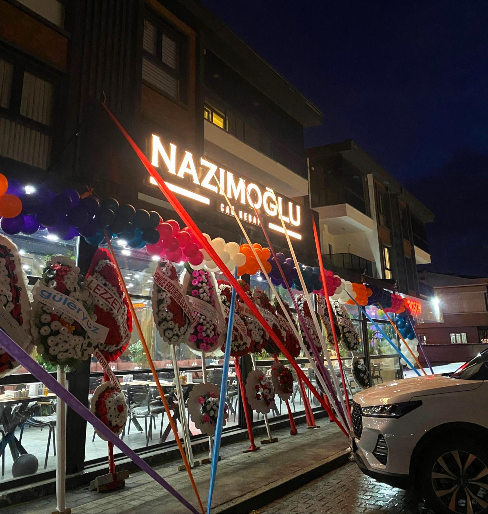
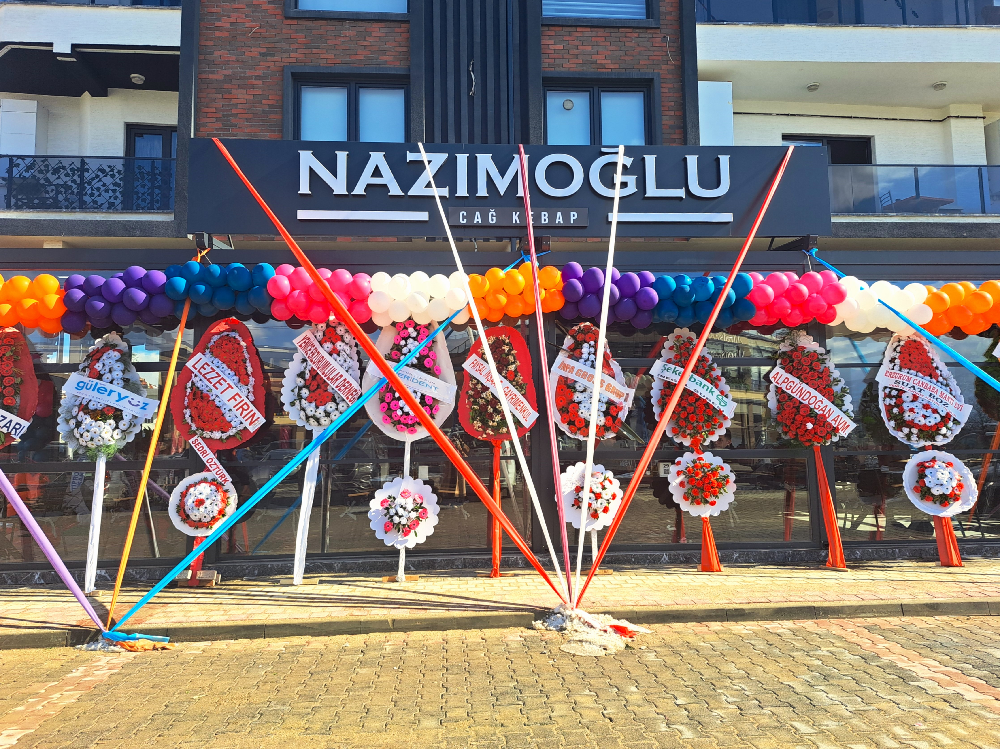
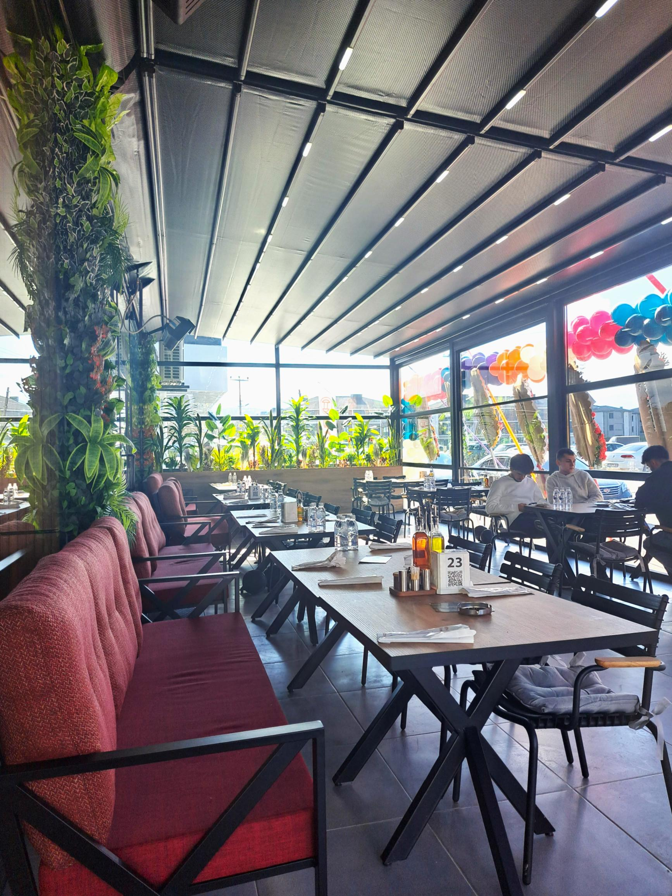
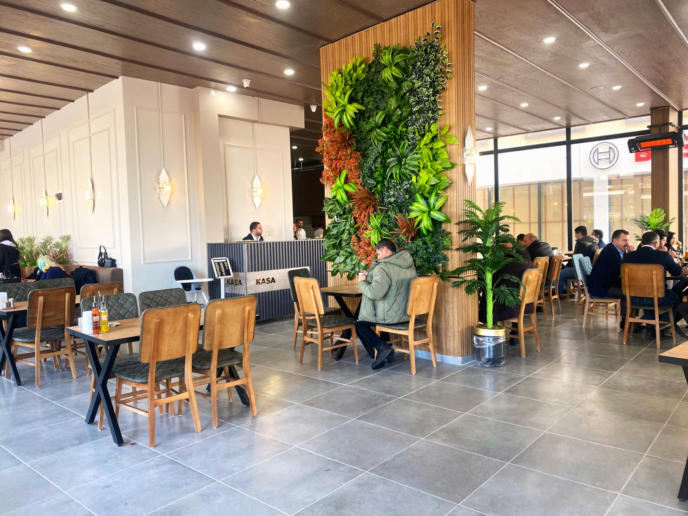
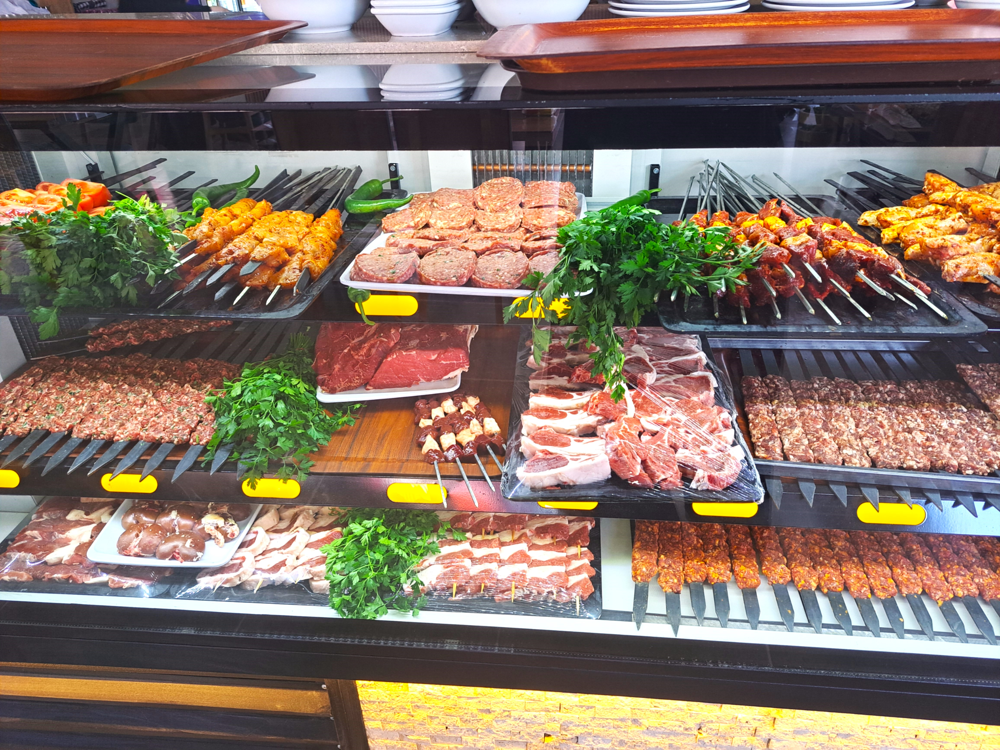
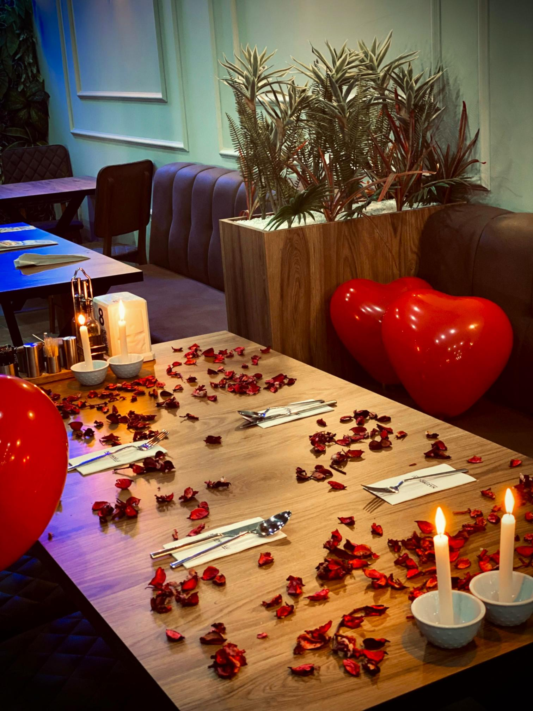
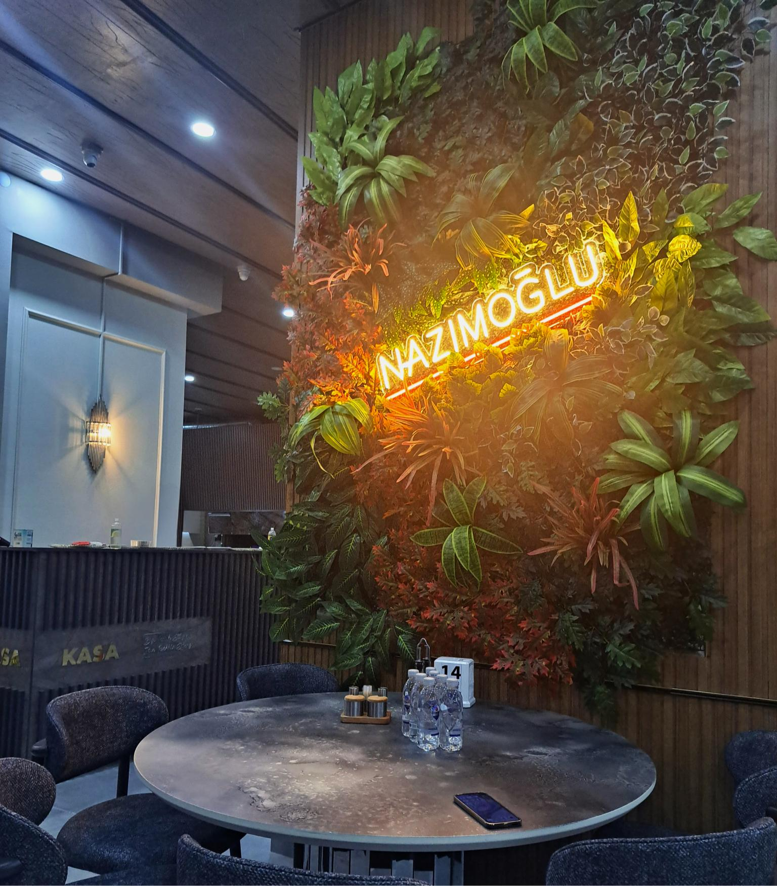

Modern ve geleneksel tasarımın mükemmel uyumu. Misafirlerimiz için özenle hazırlanmış konforlu atmosferimiz.

Günlük koşuşturmacadan uzaklaşıp, huzur dolu bir yemek molası verebileceğiniz bir sığınak

Güler yüzlü hizmetimiz ve samimi ortamımızla, evinizdeki gibi hissedeceksiniz

Sevdiklerinizle paylaşabileceğiniz, bol çeşitli geleneksel kebap menüleri

Yöresel üreticilerden özenle seçilmiş, mevsimine uygun en taze malzemeler.

Sevdiklerinizle birlikte unutulmaz anlar yaşayacağınız özel bir akşam yemeği.

Göz alıcı sunumlarla taçlandırılmış, eşsiz tatlar sizi bekliyor.
© 2025 Nazımoğlu. Tüm hakları saklıdır.